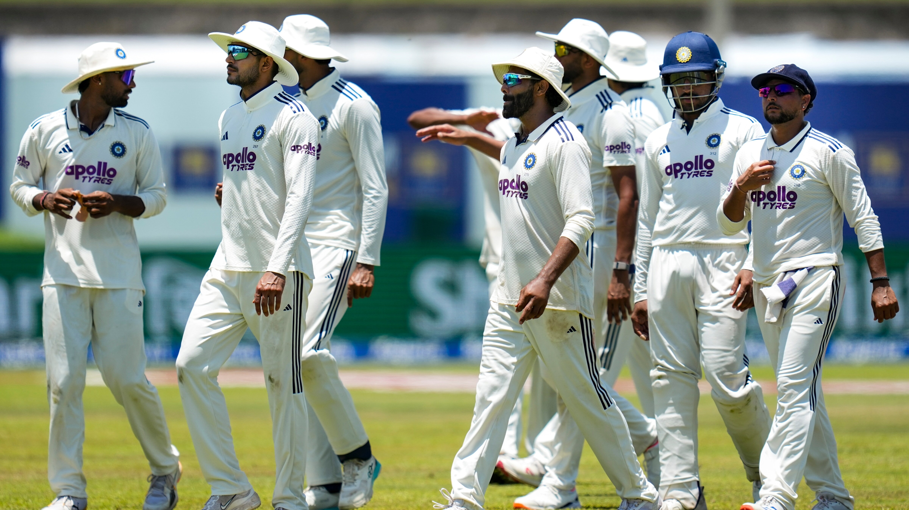

🏏 శ్రీలంకపై గెలిచినా.. బంగ్లాదేశ్ కంటే కిందే టీమిండియా.. WTC ఫైనల్ బెర్త్ కోసం భారీ సవాల్

శ్రీలంకతో జరిగిన గాలే టెస్టులో టీమిండియా అదరగొట్టింది. ఆతిథ్య జట్టుపై 165 పరుగుల భారీ తేడాతో విజయం సాధించి సిరీస్లో ఆధిక్యం సంపాదించింది. ఈ విజయంతో భారత జట్టు ప్రపంచ టెస్టు ఛాంపియన్షిప్ (WTC) 2025-27 సైకిల్లో తన పాయింట్ల శాతాన్ని మెరుగుపరుచుకుంది. అయితే శ్రీలంకపై ఘన విజయం సాధించినప్పటికీ డబ్ల్యూటీసీ పాయింట్ల పట్టికలో భారత్ తన స్థానాన్ని మెరుగుపరుచుకోలేకపోయింది. ప్రస్తుతం 53.33 శాతం పాయింట్లతో ఐదో స్థానంలోనే కొనసాగుతోంది. భారత్ కంటే బంగ్లాదేశ్ మెరుగైన స్థితిలో ఉండటం ఇప్పుడు ఆసక్తికరంగా మారింది.
గాలే టెస్టుకు ముందు టీమిండియా 9 మ్యాచ్లు ఆడి నాలుగు విజయాలు సాధించింది. దీంతో 48.15 శాతం పాయింట్లతో కొనసాగింది. శ్రీలంకపై 165 పరుగుల విజయం సాధించడంతో భారత జట్టు పాయింట్ల శాతం 53.33కి పెరిగింది. అయినప్పటికీ పాయింట్ల పట్టికలో ఐదో స్థానం నుంచి పైకి వెళ్లలేకపోయింది. ప్రస్తుతం 5 టెస్టుల్లో మూడు విజయాలు సాధించిన బంగ్లాదేశ్ 66.67 శాతం పాయింట్లతో నాలుగో స్థానంలో ఉంది. దీంతో భారత్ కంటే బంగ్లాదేశ్ ప్రస్తుతం మెరుగైన స్థితిలో కనిపిస్తోంది.

శ్రీలంకతో సిరీస్లో భారత్కు ఇంకా ఒక టెస్టు మ్యాచ్ మిగిలి ఉంది. ఆ మ్యాచ్ కొలంబోలోని ఎస్ఎస్సీ మైదానంలో ఆగస్టు 23 నుంచి ప్రారంభం కానుంది. తొలి టెస్టులో భారీ విజయాన్ని నమోదు చేసిన టీమిండియా, రెండో టెస్టులోనూ గెలిచి సిరీస్ను 2-0తో క్లీన్ స్వీప్ చేయాలని లక్ష్యంగా పెట్టుకుంది. ఈ మ్యాచ్లో కూడా విజయం సాధిస్తే డబ్ల్యూటీసీ పాయింట్ల పట్టికలో భారత్ పరిస్థితి మరింత మెరుగుపడుతుంది. అయితే ఫైనల్కు చేరాలంటే ఒక్క సిరీస్ విజయం మాత్రమే సరిపోదు.
WTC 2025-27 సైకిల్లో టీమిండియాకు ఇంకా మొత్తం 8 టెస్టులు మిగిలి ఉన్నాయి. ఈ మ్యాచ్లు భారత జట్టు ఫైనల్ అవకాశాలను పూర్తిగా నిర్ణయించనున్నాయి. ముఖ్యంగా ప్రతి మ్యాచ్లో ఫలితం భారత్కు అత్యంత కీలకం కానుంది. మిగిలిన ఎనిమిది మ్యాచ్ల్లోనూ భారత్ వరుసగా విజయాలు సాధిస్తే పాయింట్ల శాతం గరిష్ఠంగా 74.07కి చేరుకునే అవకాశం ఉంటుంది. అలా జరిగితే ఫైనల్ బెర్త్కు టీమిండియా బలమైన పోటీదారుగా నిలుస్తుంది.
అయితే మిగిలిన మ్యాచ్ల్లో ఒక్క ఓటమి కూడా భారత్కు నష్టమే. ఎనిమిది మ్యాచ్ల్లో ఒక్క మ్యాచ్ ఓడిపోతే పాయింట్ల శాతం 68.52కి పడిపోతుంది. రెండు ఓటములు ఎదురైతే 62.96 శాతానికి, మూడు మ్యాచ్ల్లో ఓడితే 57.41 శాతానికి దిగజారుతుంది. అంటే ఫైనల్ రేసులో నిలవాలంటే భారత్ వరుస విజయాలు సాధించడం చాలా అవసరం. ముఖ్యంగా ప్రత్యర్థి జట్లతో జరిగే కీలక సిరీస్లలో పాయింట్లు కోల్పోతే ఫైనల్ చేరే అవకాశాలు సంక్లిష్టంగా మారే అవకాశం ఉంది.
భారత్ మిగిలిన ఎనిమిది టెస్టుల్లో ఐదు విజయాలు, రెండు డ్రాలు సాధించినా పాయింట్ల శాతం 61.11 వద్దే ఉంటుంది. ప్రస్తుత పరిస్థితుల్లో ఈ శాతం ఫైనల్ బెర్త్కు సరిపోతుందనే గ్యారెంటీ లేదు. ఇతర జట్ల ఫలితాలపై కూడా ఆధారపడాల్సిన పరిస్థితి రావచ్చు. అందుకే టీమిండియా ఇకపై ప్రతి టెస్టును కీలకంగా తీసుకోవాల్సి ఉంటుంది.

శ్రీలంక సిరీస్ ముగిసిన తర్వాత భారత జట్టు న్యూజిలాండ్ పర్యటనకు వెళ్లనుంది. అక్కడ కివీస్తో రెండు టెస్టుల సిరీస్ ఆడనుంది. న్యూజిలాండ్ గడ్డపై భారత్కు గతంలో ఎదురైన అనుభవాలు అంతగా సానుకూలంగా లేవు. అక్కడి పరిస్థితులు, పిచ్లు, వాతావరణం భారత బ్యాటర్లు, బౌలర్లకు సవాల్ విసిరే అవకాశం ఉంది. దీంతో ఈ రెండు టెస్టుల్లో మంచి ఫలితాలు సాధించడం టీమిండియాకు అత్యంత కీలకంగా మారింది.
న్యూజిలాండ్ సిరీస్ అనంతరం ఆస్ట్రేలియా జట్టు భారత పర్యటనకు రానుంది. ఇరు జట్ల మధ్య ఐదు మ్యాచ్ల బోర్డర్-గవాస్కర్ ట్రోఫీ జరగనుంది. ఈ సిరీస్లో సాధించే ఫలితం డబ్ల్యూటీసీ ఫైనల్ రేసుపై భారీ ప్రభావం చూపనుంది. సొంతగడ్డపై ఆస్ట్రేలియాపై భారత్ ఆధిపత్యం ప్రదర్శించి ఎక్కువ టెస్టులు గెలిస్తే పాయింట్ల శాతం గణనీయంగా పెరిగే అవకాశం ఉంటుంది.
ముఖ్యంగా ఆస్ట్రేలియాతో జరిగే ఐదు టెస్టుల్లో 4-1 లేదా 3-1 వంటి సిరీస్ విజయాన్ని నమోదు చేయడం భారత్కు ఎంతో ఉపయోగపడుతుంది. అయితే ఆస్ట్రేలియాను తక్కువ అంచనా వేయడానికి వీల్లేదు. ఆ జట్టులో ప్రపంచ స్థాయి బ్యాటర్లు, బౌలర్లు ఉన్నారు. కాబట్టి భారత జట్టు అన్ని విభాగాల్లోనూ సమష్టిగా రాణించాల్సిన అవసరం ఉంది.
ప్రస్తుతం డబ్ల్యూటీసీ పాయింట్ల పట్టికలో భారత్ ఐదో స్థానంలో ఉన్నప్పటికీ ఫైనల్ అవకాశాలు పూర్తిగా ముగియలేదు. ఇంకా ఎనిమిది టెస్టులు మిగిలి ఉండటంతో పరిస్థితులను మార్చుకునే అవకాశం టీమిండియా చేతుల్లోనే ఉంది. అయితే ఇకపై ప్రతి విజయం కీలకం. ఒక్క ఓటమి కూడా లెక్కలను మార్చే అవకాశం ఉంది.
శ్రీలంకపై రెండో టెస్టులో గెలిచి సిరీస్ను క్లీన్ స్వీప్ చేయడం ద్వారా భారత్ తన ప్రయాణాన్ని బలంగా కొనసాగించాలి. ఆ తర్వాత న్యూజిలాండ్, ఆస్ట్రేలియాతో జరిగే కీలక టెస్టుల్లో మెరుగైన ఫలితాలు సాధిస్తే డబ్ల్యూటీసీ ఫైనల్ బెర్త్ కోసం భారత్ తన అవకాశాలను మరింత బలపరుచుకోవచ్చు. మొత్తంగా చూస్తే శ్రీలంకపై విజయం సాధించినప్పటికీ బంగ్లాదేశ్ కంటే కిందే ఉన్న టీమిండియాకు ఇక ముందు ప్రతి టెస్టు ‘డూ ఆర్ డై’ మ్యాచ్లా మారనుంది.